The faltung-series twins of Pinkie Pie's Balloon Shop and Pinkie Pie's Balloon Palace. Before: the originals (their own screenshots, from
their repository — they stay as they are). After: the twins, pictures saved by ballonwinkelTest --screenshots /
ballonpaleisTest --screenshots. The same engine and controls; a rose field and a deep plum field, faceted wire balloons that fill
to their value, folded strips, parallelogram tokens, a sliders page, wire solids in place of the ponies.
balloon shop → ballonwinkel
before
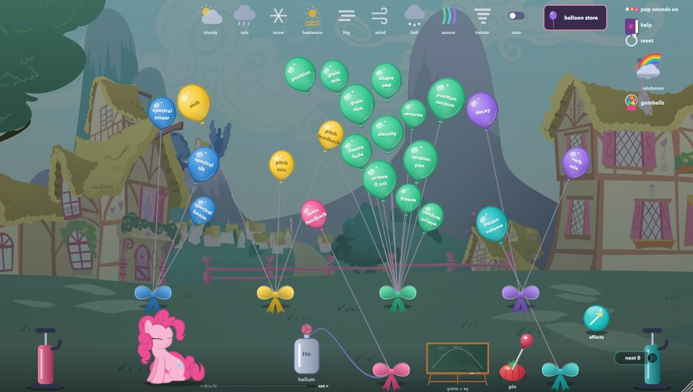
after
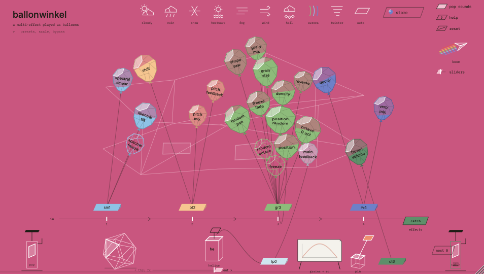
balloon palace → ballonpaleis
before
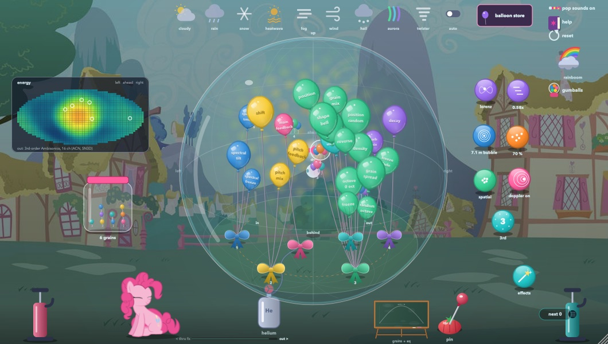
after
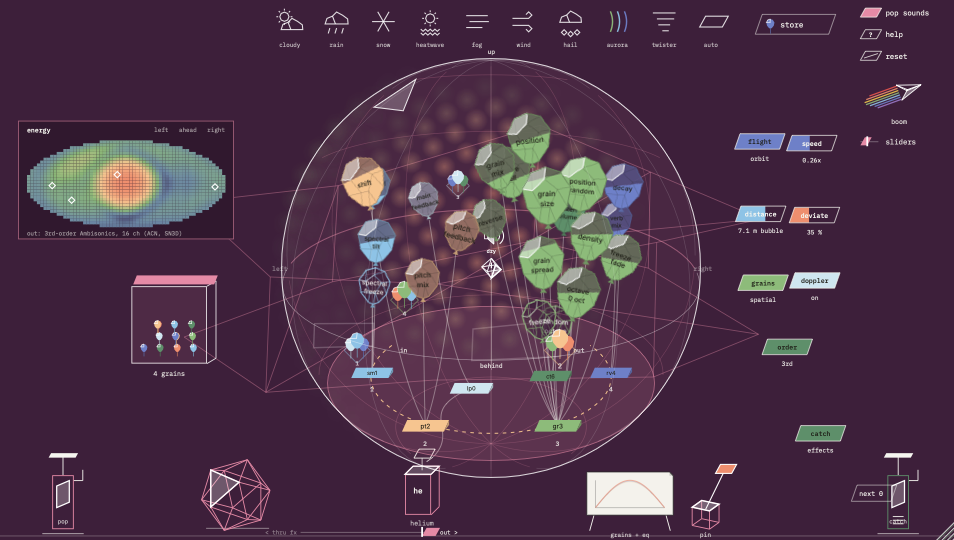
ballonwinkel: sliders (the gumball menu) · store · help · board · rain
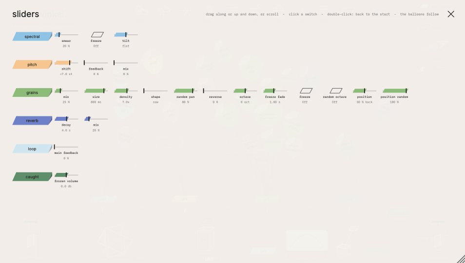
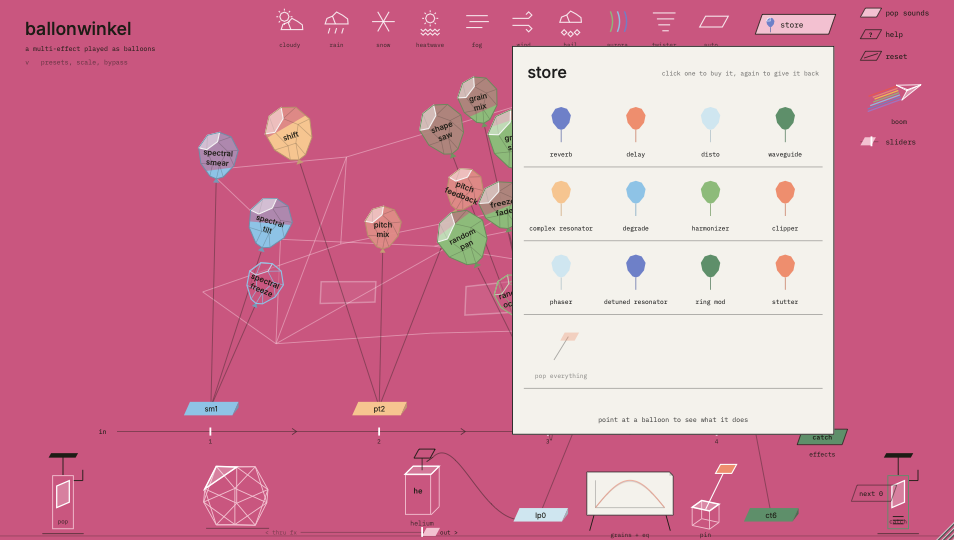
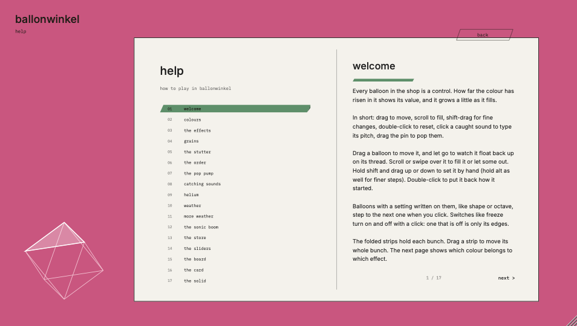
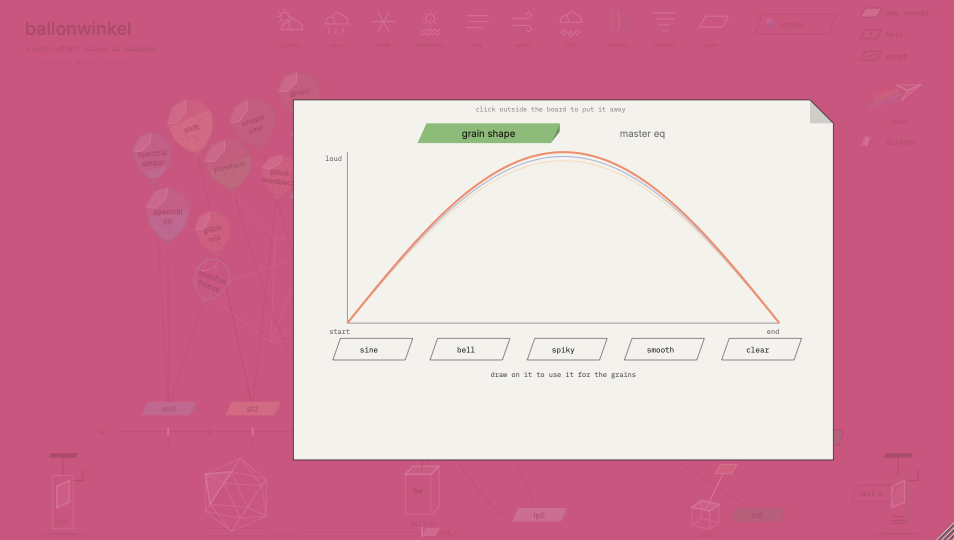
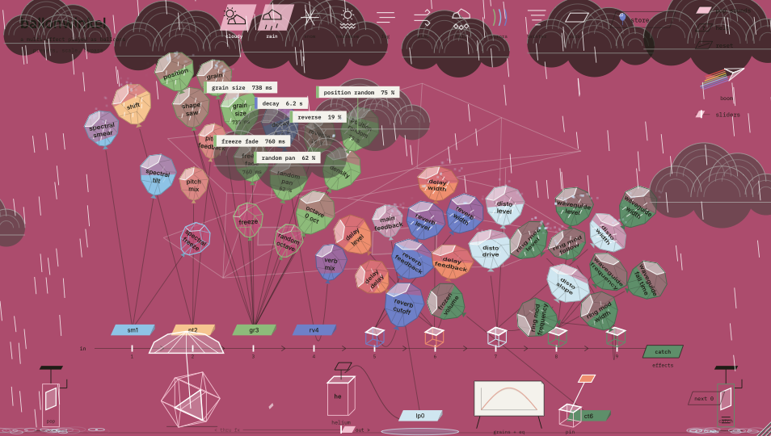
ballonpaleis: sliders · store · help · board · rain
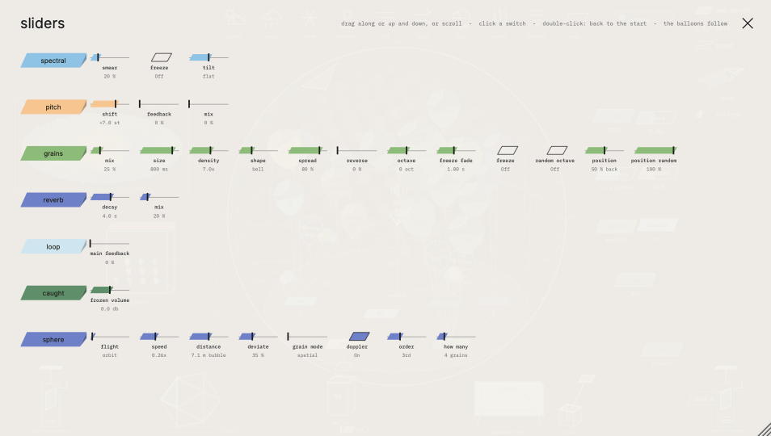
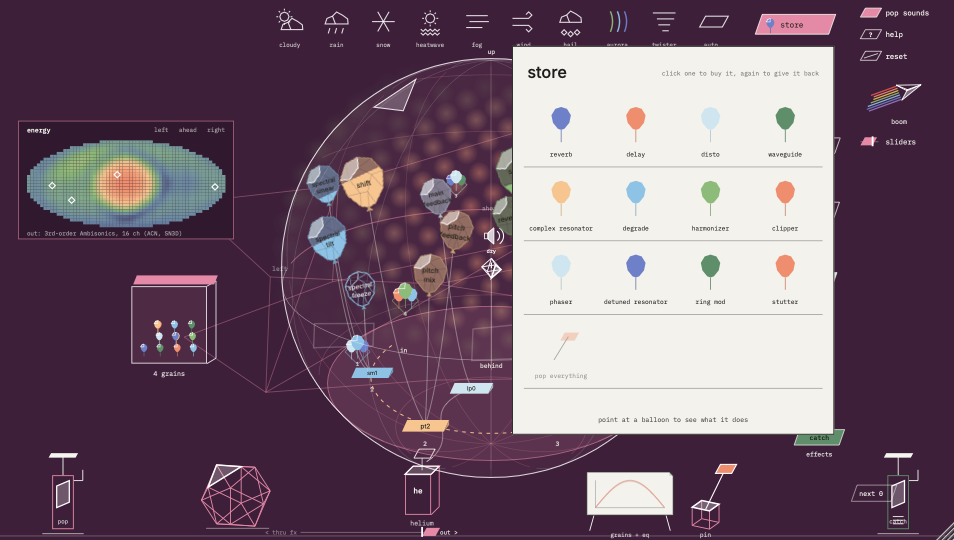
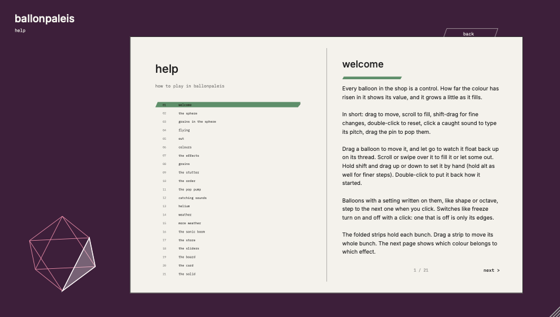
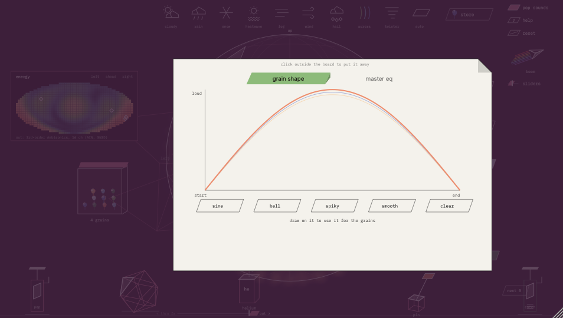
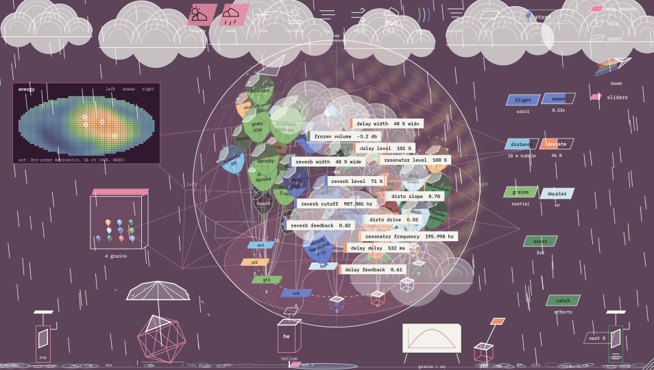